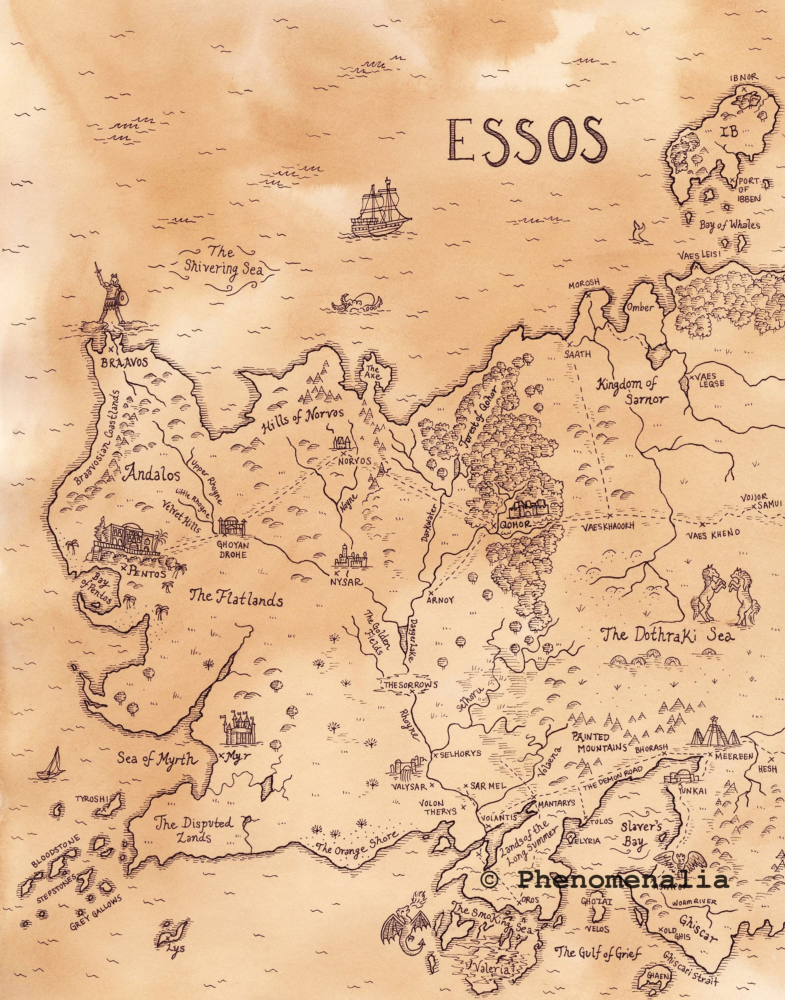

The fictional world in which the A Song of Ice and Fire novels by George R. R. Martin take place is divided into several continents, known collectively as The Known World. Most of the story takes place on the continent of Westeros and in a large political entity known as the Seven Kingdoms. Those kingdoms are spread across nine regions: the North, the Iron Islands, the Riverlands, the Vale, the Westerlands, the Stormlands, the Reach, the Crownlands, and Dorne. A massive wall of ice and old magic separates the Seven Kingdoms from the largely unmapped area to the north. The vast continent of Essos is located east of Westeros, across the Narrow Sea. The closest foreign nations to Westeros are the Free Cities, a collection of nine independent city-states along the western edge of Essos. The lands along the southern coastline of Essos are called the Lands of the Summer Sea and include Slaver's Bay and the ruins of Valyria. The latter is the former home of the ancestors of House Targaryen. To the south of Essos are the continents of Sothoryos and Ulthos, which in the narrative are largely unexplored.
The story takes place primarily on an elongated continent called Westeros, which is roughly the size of South America. The continent is home to the Seven Kingdoms, also known as "the Realm" or the "Sunset Kingdom", located to the south side of the Wall, a massive man-made ice wall (allegedly fused with magic) 700 feet in height and spanning east–west for 300 miles from coast to coast. The Seven Kingdoms are further divided into the so-called "North" and "South" by a swamp-rich isthmus called the Neck. The land north of the Wall still makes up a large chunk (being roughly the size of Canada) of Westeros, but remains largely unmapped and unexplored, especially the ice field region north and west of a massive mountain range called the Frostfangs, which marks the farthest geographic limit of human settlements. The northern extent of the continent is therefore unknown, although thought to be continuous with a polar ice cap north of the Shivering Sea known as the White Waste.
Part of the narrative in A Song of Ice and Fire lies across the Narrow Sea from Westeros, an area comprising the large eastern continent named Essos. Being roughly the size of Eurasia, Essos has geography and climate that vary greatly. The western coastline is characterized by green rolling hills, Free sities, the massive Forest of Qohor, and extensive island chains such as Braavos and Lys. The middle of the continent is covered by the flat grasslands of the Dothraki Sea and the arid lands known as the Red Waste to the east. Beyond the Red Waste lies the city of Qarth. The south is dominated by dry rolling hills and has a Mediterranean climate, with a coastline along the Summer Sea and Slaver's Bay. The north coast of the mainland is separated from the polar cap by the Shivering Sea. To the south, across the Summer Sea, lies the uncharted jungle continent of Sothoryos. Much of the fictional history of Essos relates to , a city located on a peninsula in southern Essos and the origin of House Targaryen before the destruction of the Valyrian Empire in an unspecified cataclysm. After the destruction of Valyria, the cities of Astapor, Yunkai, and Meereen regained independence and ruled their respective areas as city-states. The area is known in the books as Slaver's Bay.
| Ruling House | The king | Ruling ages (p.i) | |
|---|---|---|---|
| Start | End | ||
| Targarien House | Aegon the Invader | Since invading | 37 |
| Eyenis the Weak | 37 | 42 | |
| Mayegor the Cruel | 42 | 48 | |
| Another Targariens | 48 | 283 | |
| Totally | 283 | ||